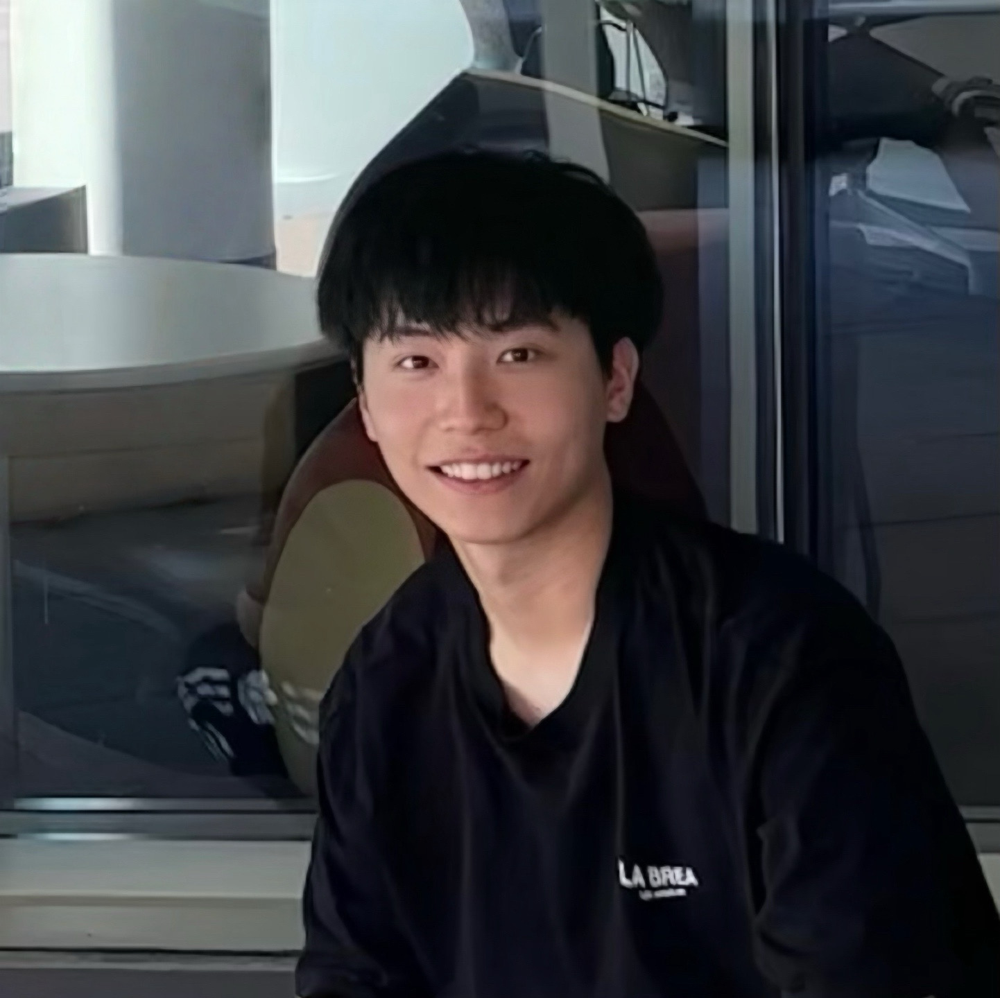
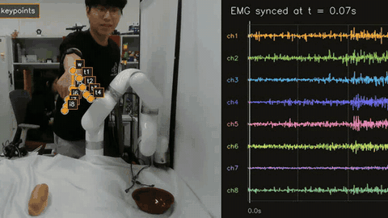
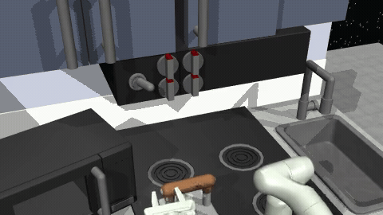
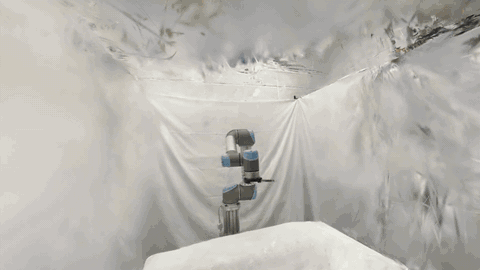
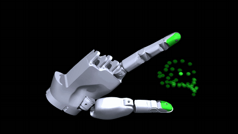

Cheng (Edward) Zhang
I am a computer science undergraduate at Columbia University. At Columbia, I am very fortunate to work with Prof. Matei Ciocarlie and Dr. Zhanpeng He at the Robotic Manipulation and Mobility (ROAM) Lab.
My research interests lie in robotics and deep learning. I currently focus on building algorithms and hardware for reliable robotic manipulation.
Updates
- [Aug 2026]Our dexterous hand demo, powered by in-house world action model Wall-B, was presented at the World Robotic Conference (WRC) in Beijing. Come see us in person!
- [Jun 2026]I joined Xsquare Robotics as a VLA post-training intern on the dexterous hand team!
- [Sep 2025]Our paper MiniBEE, a compact bimanual manipulator, is available on arXiv!
- [Nov 2024]I joined ROAM Lab as a Research Assistant!
Publications
(* - indicates equal contributions and joint-first authors)

Projects
-

LFEMG: Learning Force-Aware Robot Manipulation with EMG-Labelled Human Data COMS 6998 Deep Learning for Robot Manipulation – Course Project Developed a pipeline for collecting force-aware robot demonstrations from human data. We trained a model to infer fingertip force from forearm EMG, achieving a test R² of 0.84 on held-out trajectories. We aligned the predicted force labels with RGB-D hand trajectories and replayed the resulting demonstrations on a real xArm. Team project with Sandy Li. -

Integrating Conditional Flow Matching with RL COMS 4733 Computational Aspects of Robotics – Course Project Proposed Flow Soft Actor-Critic (FSAC), a Dual-MDP approach to off-policy flow-based RL, and explored online FPO fine-tuning of flow-based behavioral cloning policies on continuous-control and manipulation tasks. Team project with Hua Hsuan Liang and Jaisel Singh. -

3D Gaussian Ray Tracing COMS 4160 Computer Graphics – Course Project CPU implementation of NVIDIA’s 3DGRT; captured iPhone RGB-D dataset, trained 3D Gaussian Splatting scenes with Nerfstudio, and ray-traced novel views from the learned Gaussians. -

Efficient Kinematics Optimizer in MuJoCo Built a MuJoCo-based visualizer to estimate the reachable relative workspace of parameterized hand designs. Given a set of design parameters, the system scores each candidate by workspace size and automatically optimizes the design using the Cross-Entropy Method to maximize workspace.
Teaching
-
COMS 4733 Computational Aspects of Robotics Teaching Assistant
-
COMS 4771 Machine Learning Teaching Assistant
-
COMS 3203 Discrete Mathematics Teaching Assistant